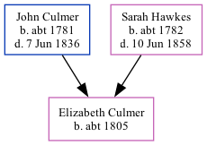

Elizabeth Davison Culmer c1805 -
[ Home ] | [ Calendar ] | [ Surnames Index ] | [ Family History ]The child of John Culmer (a parish clerk) and Sarah Hawkes, Elizabeth Culmer, the four times great-aunt of <a href="I1.html">Nigel Horne</a>, was born <i>c.</i> 1805<span class="citation">1</span> and baptized in Stourmouth, Kent, England on Dec 8, 1805.
Parents
- John was born c. 1781
- Sarah Anne was born c. 1782
Citations
- Kent, England, Tyler Index to Parish Registers, 1538-1874 Online publication - Provo, UT, USA: Ancestry.com Operations, Inc., 2010. This collection was indexed by Ancestry World Archives Project contributors.Original data - Frank Watt Tyler. The Tyler Collection. Canterbury, Kent, England: The Institute of Herald
Family Tree
Generated by Ged2Site. Last updated on Jul 20, 2025